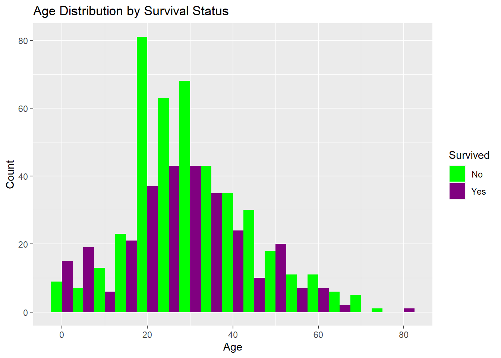
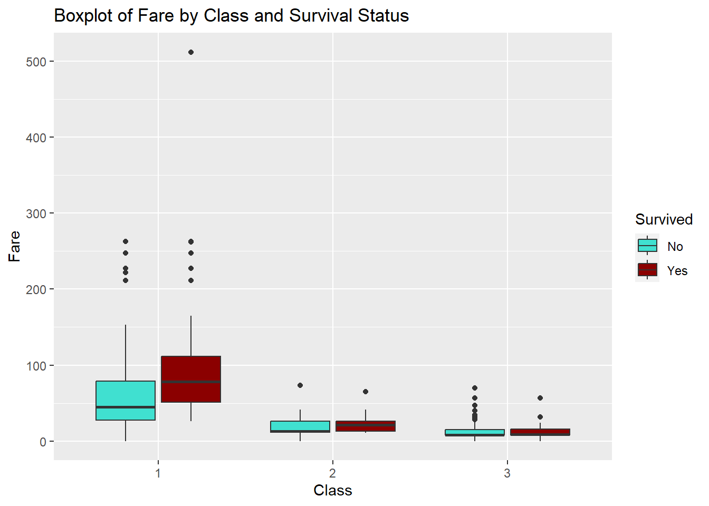

# Set CRAN mirror non-interactively
options(repos = c(CRAN = "https://cloud.r-project.org"))
# Install and load the required packages
install.packages(c("titanic", "ggplot2"))Installing packages into 'C:/Users/racha/AppData/Local/R/win-library/4.2'
(as 'lib' is unspecified)package 'titanic' successfully unpacked and MD5 sums checked
package 'ggplot2' successfully unpacked and MD5 sums checked
The downloaded binary packages are in
C:\Users\racha\AppData\Local\Temp\RtmpeufGNm\downloaded_packageslibrary(titanic)Warning: package 'titanic' was built under R version 4.2.3library(ggplot2)Warning: package 'ggplot2' was built under R version 4.2.3# Load the titanic package
library(titanic)
# Download the Titanic dataset
data("titanic_train")
# Save the dataset as a CSV file
write.csv(titanic_train, "titanic_dataset.csv", row.names = FALSE)
# Explore the dataset
head(titanic_train) PassengerId Survived Pclass
1 1 0 3
2 2 1 1
3 3 1 3
4 4 1 1
5 5 0 3
6 6 0 3
Name Sex Age SibSp Parch
1 Braund, Mr. Owen Harris male 22 1 0
2 Cumings, Mrs. John Bradley (Florence Briggs Thayer) female 38 1 0
3 Heikkinen, Miss. Laina female 26 0 0
4 Futrelle, Mrs. Jacques Heath (Lily May Peel) female 35 1 0
5 Allen, Mr. William Henry male 35 0 0
6 Moran, Mr. James male NA 0 0
Ticket Fare Cabin Embarked
1 A/5 21171 7.2500 S
2 PC 17599 71.2833 C85 C
3 STON/O2. 3101282 7.9250 S
4 113803 53.1000 C123 S
5 373450 8.0500 S
6 330877 8.4583 Q# Data Visualization
# Example 1: Bar chart for survival status
ggplot(titanic_train, aes(x = Survived, fill = factor(Survived))) +
geom_bar() +
labs(title = "Survival Status",
x = "Survived",
y = "Count") +
scale_fill_manual(values = c("#FF0000", "#0000FF"), name = "Survived",
labels = c("No", "Yes"))# Example 2: Age distribution
ggplot(titanic_train, aes(x = Age, fill = factor(Survived))) +
geom_histogram(binwidth = 5, position = "dodge") +
labs(title = "Age Distribution by Survival Status",
x = "Age",
y = "Count") +
scale_fill_manual(values = c("#00FF00", "#800080")
, name = "Survived",
labels = c("No", "Yes"))Warning: Removed 177 rows containing non-finite values (`stat_bin()`).
# Example 3: Scatter plot of Fare and Age
ggplot(titanic_train, aes(x = Fare, y = Age, color = factor(Survived))) +
geom_point() +
labs(title = "Scatter plot of Fare and Age",
x = "Fare",
y = "Age") +
scale_color_manual(values = c("#FFA500", "#0000FF")
, name = "Survived",
labels = c("No", "Yes"))Warning: Removed 177 rows containing missing values (`geom_point()`).# Example 4: Gender distribution
ggplot(titanic_train, aes(x = factor(Sex), fill = factor(Survived))) +
geom_bar() +
labs(title = "Gender Distribution by Survival Status",
x = "Gender",
y = "Count") +
scale_fill_manual(values = c("#FFC0CB", "#006400")
, name = "Survived",
labels = c("No", "Yes"))# Example 5: Class distribution
ggplot(titanic_train, aes(x = factor(Pclass), fill = factor(Survived))) +
geom_bar() +
labs(title = "Class Distribution by Survival Status",
x = "Class",
y = "Count") +
scale_fill_manual(values = c("#FFFF00", "#8B4513")
, name = "Survived",
labels = c("No", "Yes"))
# Example 6: Boxplot of Fare by Class
ggplot(titanic_train, aes(x = factor(Pclass), y = Fare, fill = factor(Survived))) +
geom_boxplot() +
labs(title = "Boxplot of Fare by Class and Survival Status",
x = "Class",
y = "Fare") +
scale_fill_manual(values = c("#40E0D0", "#8B0000")
, name = "Survived",
labels = c("No", "Yes"))
# Example 7: Survival status by Embarked location
ggplot(titanic_train, aes(x = factor(Embarked), fill = factor(Survived))) +
geom_bar() +
labs(title = "Survival Status by Embarked Location",
x = "Embarked",
y = "Count") +
scale_fill_manual(values = c("#E6E6FA", "#808000")
, name = "Survived",
labels = c("No", "Yes"))# Example 8: Age distribution by Class and Survival Status
ggplot(titanic_train, aes(x = Age, fill = factor(Survived))) +
geom_histogram(binwidth = 5, position = "dodge") +
facet_grid(. ~ Pclass) +
labs(title = "Age Distribution by Class and Survival Status",
x = "Age",
y = "Count") +
scale_fill_manual(values = c("#00FFFF", "#800000")
, name = "Survived",
labels = c("No", "Yes"))Warning: Removed 177 rows containing non-finite values (`stat_bin()`).